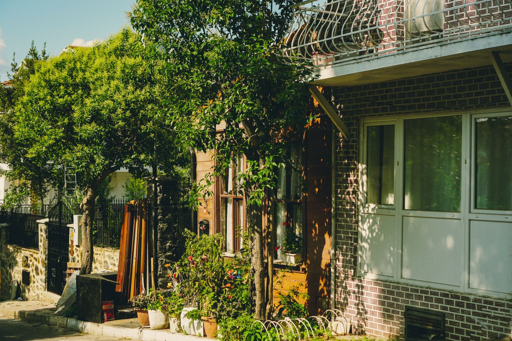
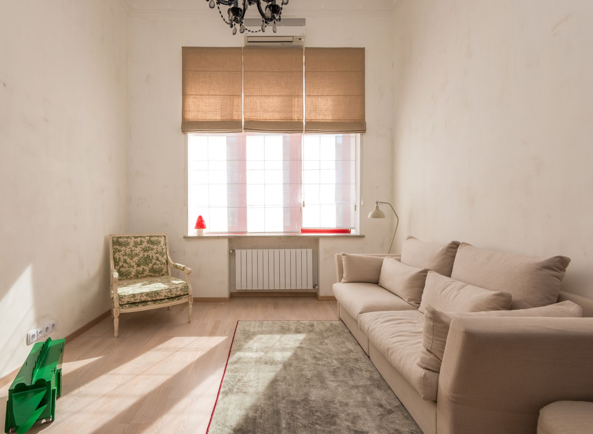
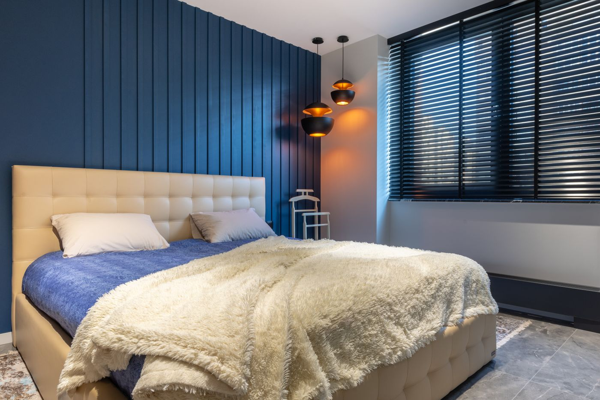
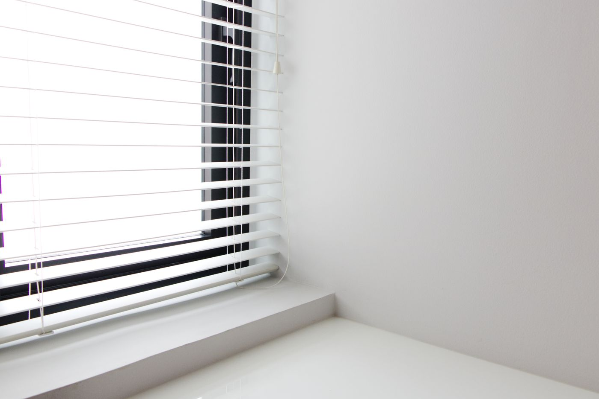
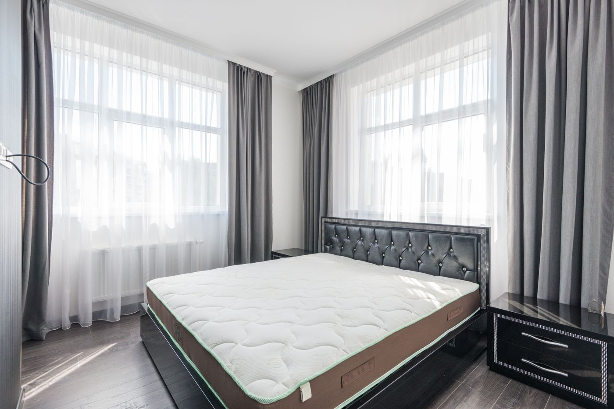
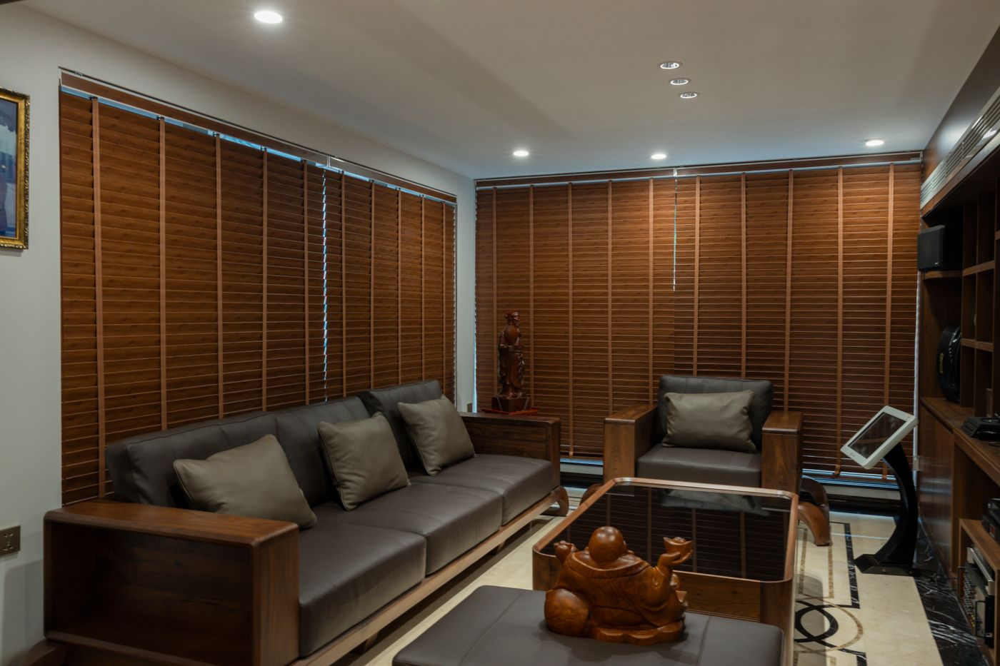
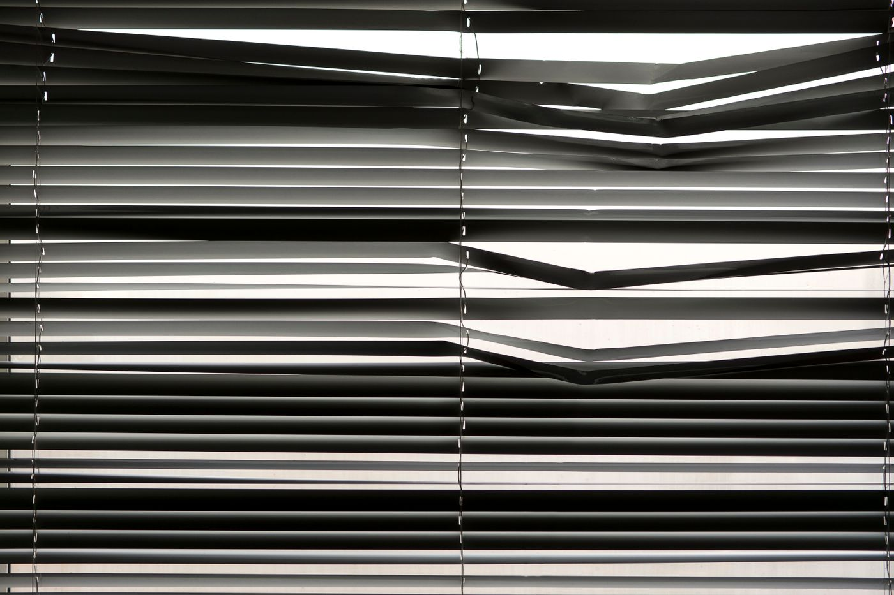
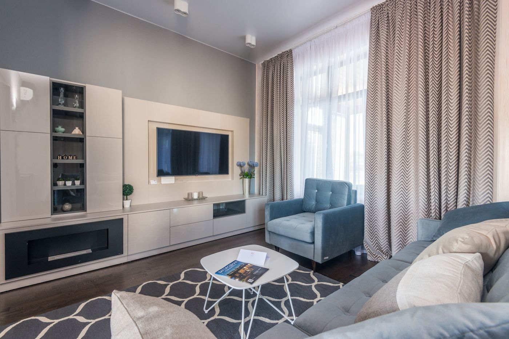

Roller Blackout
Tela opaca que corta el paso de la luz. Es la que va en dormitorios, cuartos de bebé y salas donde se proyecta.
- Oscuridad real
- Ayuda contra el calor y el frío
- Privacidad de día y de noche
Cortinas roller en blackout y screen 5%, zebras, bandas verticales y paneles. Te tomamos las medidas sin cargo, las fabricamos a medida y las colocamos nosotros.
No todas las ventanas necesitan lo mismo. Un dormitorio quiere oscuridad de verdad; un living quiere ver la calle sin que lo vean. Esto es lo que hacemos y para qué sirve cada uno.
Tela opaca que corta el paso de la luz. Es la que va en dormitorios, cuartos de bebé y salas donde se proyecta.
Tejido técnico con 5% de apertura: filtra el sol y el reflejo, pero te deja ver hacia afuera. La favorita de livings y oficinas.
Franjas opacas y traslúcidas que se alinean entre sí. Con un movimiento de cadena pasás de luz difusa a ambiente cerrado.
Lamas que giran sobre su eje. La solución de siempre para ventanales anchos y puertas balcón.
Paños grandes que se deslizan uno detrás del otro. Sirven de cortina y también como división de ambientes.
Contame qué ambiente es, cuánto sol le pega y a qué hora lo usás. Con eso te digo qué tela conviene — sin compromiso.
Consultar por WhatsAppElegí el sistema, el color y movela como lo harías en tu casa. Abajo vas a ver cuánta luz entra, cuánta privacidad ganás y cuánto seguís viendo hacia afuera.

Roller screen 5% arena, bajada al 60%.
Contanos qué ambiente es y, si tenés, mandanos una foto de la ventana. Te orientamos ahí mismo.
Coordinamos día y hora. Llevamos muestrarios de tela para que veas los colores en tu propia luz.
Cadena o motorizada, lado derecho o izquierdo, caída adelante o atrás. Te pasamos el presupuesto cerrado.
La cortina se hace con tus medidas exactas y la colocamos nosotros. Dejamos el ambiente limpio.
Livings, dormitorios, oficinas y locales. Misma idea siempre: que la cortina se note poco y se sienta mucho.







“Vinieron a medir un martes y el lunes ya estaban colocadas. El dormitorio quedó oscuro de verdad.”
Marina G. · Villa Urquiza
“Nos hizo todo el ventanal del living con screen. Seguimos viendo la calle y bajó muchísimo el calor.”
Diego F. · San Justo
“Trabajo prolijo y precio claro desde el principio. Ya le encargamos las de la oficina.”
Carla P. · Caballito
No. Vamos a tu casa u oficina, medimos y te llevamos los muestrarios de tela. Si no cerrás el trabajo, no pagás nada.
Entre 7 y 12 días hábiles según la tela. Cuando la fábrica confirma la fecha te avisamos y coordinamos la colocación.
Es el porcentaje de apertura del tejido: cuánto espacio libre queda entre hilo e hilo. Con 5% filtrás el sol y el reflejo, pero seguís viendo hacia afuera. Menos apertura (3%) da más privacidad; más (10%) da más visión.
La tela no deja pasar nada. Lo que se ve es un halo en los costados, porque la cortina va sobre el marco. Si buscás oscuridad total se coloca sobrepuesta a la pared, con más recorrido a los lados: en la visita te lo marcamos.
Sí, con motor a batería recargable o a 220V, con control remoto. Conviene sobre todo en ventanas altas o ventanales muy anchos.
Plumero o aspiradora a baja potencia y, para manchas, paño apenas húmedo con agua y jabón neutro. Nunca lavarropas ni productos con solvente.
Se toma una seña al aceptar el presupuesto y el saldo al colocar. Efectivo, transferencia y, según el trabajo, en cuotas: consultanos.
Una foto y la medida aproximada alcanzan para empezar. Te respondo yo, no un bot.